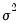

|
|
|
EViews computes several different tests for a single change in the location parameter (mean) of a series in non-panel workfiles. Simply click on View/ Time-series Diagnostics/Change Point Tests... from the main series menu to perform all of the following tests:When you click on the View/ Time-series Diagnostics/Change Point Tests... menu item, EViews will display a dialog containing bootstrap and output settings:The Options section of the dialog presents the set of options used in calculating the bootstrapped p-values of the tests.
replications that produce test statistics larger than the original statistic.
is a smooth function of a time trend, and are i.i.d. with variance  and zero mean, and are such that the expression has no complex roots that satisfy .
 of the autoregressive process slowly with the sample size so that the model accurately captures the dependency structure without overfitting.
of the autoregressive process slowly with the sample size so that the model accurately captures the dependency structure without overfitting. .
. may be calculated as:
may be calculated as: is the overall sample standard deviation of
is the overall sample standard deviation of  .
. simulations of the AR error terms using the coefficients estimated in the previous steps, can calculate the test statistics.
simulations of the AR error terms using the coefficients estimated in the previous steps, can calculate the test statistics. as:
as: are arbitrary smoothing parameters.
are arbitrary smoothing parameters.  can be retrieved.
can be retrieved.